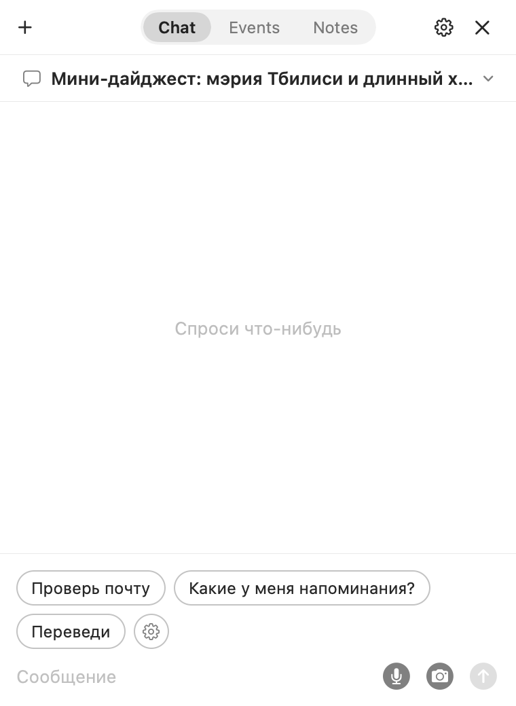
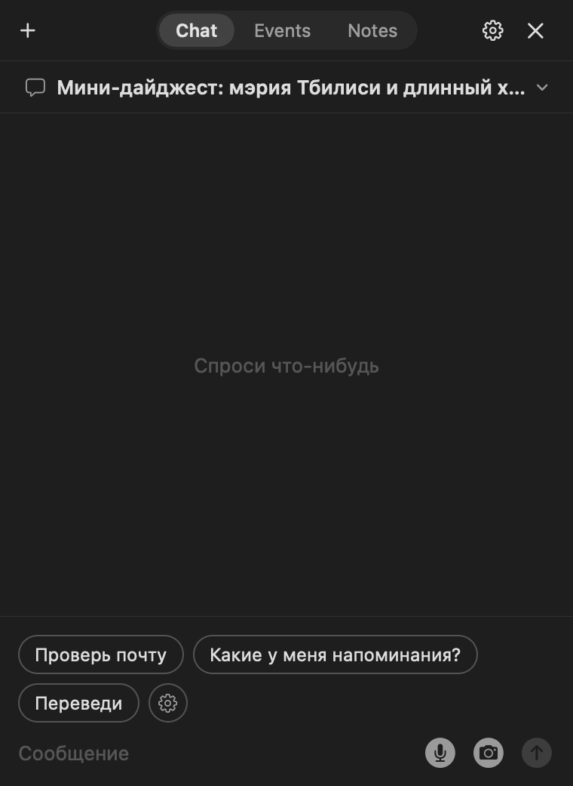

Открывается по клику на медведя или по шорткату. Вопрос, ответ, окно закрыто. Диалог остаётся в списке на 30 дней.


01
Быстрые команды
Кнопки в пустом чатеУ каждой короткая подпись и своя инструкция. На кнопке написано «Проверь почту», отправляется полный текст задания.
Переключатель «сразу»Команда отправляется по нажатию или подставляется в поле ввода для правки.
ПорядокМеняется в настройках или просьбой в чате: «поставь перевод первым».
Шестерёнка в конце рядаОткрывает настройки команд.
02
Голос
⇧⌘E из любого приложенияПервое нажатие включает микрофон в текущем чате, второе выключает. Закрытый чат сначала открывается. Новый диалог шорткат не создаёт.
Распознавание на устройствеСредствами macOS, без сторонних сервисов и подписок.
Ответ вслухНа голосовой вопрос можно получить голосовой ответ. Голос системный, есть манера «как в мультике».
Шорткат настраиваетсяКак и шорткат показа медведя.
03
Скриншоты и картинки
Камера в поле вводаЧат прячется, выделяется область экрана, снимок возвращается во вложении.
Вставка из буфераКартинка вставляется по ⌘V.
РазмерИзображения уменьшаются до 1000 px по длинной стороне.
04
Ответы
Печатаются по мере приходаMarkdown: заголовки, списки, таблицы, код.
Веб-поискПод ответом ссылки на источники. Ссылка копируется по наведению.
CopyВыделенный в ответе текст копируется кнопкой рядом с выделением.
Упоминания@ в поле ввода вставляет ссылку на заметку или событие.
05
Диалоги
НазванияВ одно-три слова, придумываются сами.
Хранение30 дней. Удаляются по одному или все сразу.
ПереключениеСписок диалогов под вкладками, «+» создаёт новый.
06
Окно
РазмерТянется за край и запоминается.
КлавишиEsc или ⌘W сворачивает, ⌘N создаёт диалог, ↩ отправляет, ⌥↩ переносит строку.
ФокусКогда приходит напоминание, окно появляется, но клавиатуру не забирает.